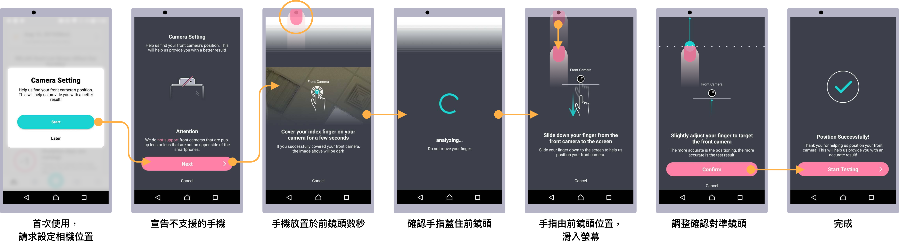
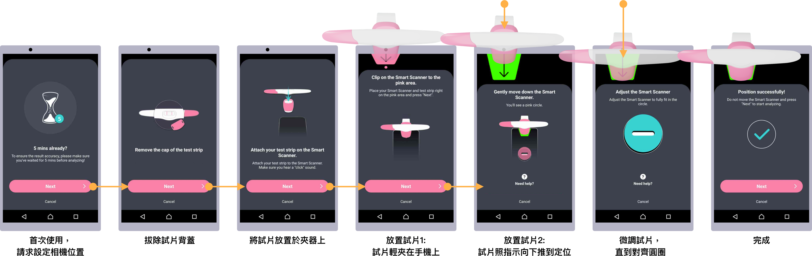

<!--Welcome to check the page-->
<!--May you have a nice day-->
<!--copyright@aaron.zl.hsu@gmail.com-->
<!DOCTYPE html>
<html lang="en">

<head>
    <title>Aaron Hsu - Project LH</title>
    <meta charset="utf-8">
    <meta name="viewport" content="width=device-width, initial-scale=1">
    <link rel="shortcut icon" type="image/png" href="images/favicon.ico" />
    <link rel="stylesheet" href="https://maxcdn.bootstrapcdn.com/bootstrap/4.1.3/css/bootstrap.min.css">
    <script src="https://ajax.googleapis.com/ajax/libs/jquery/3.3.1/jquery.min.js"></script>
    <script src="https://cdnjs.cloudflare.com/ajax/libs/popper.js/1.14.3/umd/popper.min.js"></script>
    <script src="https://maxcdn.bootstrapcdn.com/bootstrap/4.1.3/js/bootstrap.min.js"></script>
    <link rel="stylesheet" href="https://cdnjs.cloudflare.com/ajax/libs/animate.css/3.7.2/animate.min.css">
    <script src="scripts/load-effect.js"></script>
    <link rel="stylesheet" type="text/css" href="css/style.css">
    <script src="scripts/jquery.lazyload.js"></script>
    <!-- Global site tag (gtag.js) - Google Analytics -->
    <script async src="https://www.googletagmanager.com/gtag/js?id=UA-131020506-1"></script>
    <script>
        window.dataLayer = window.dataLayer || [];
        function gtag() { dataLayer.push(arguments); }
        gtag('js', new Date());

        gtag('config', 'UA-131020506-1');
    </script>

    <script>

        $(document).on('click', 'a[href^="#"]', function (event) {
            event.preventDefault();

            $('html, body').animate({
                scrollTop: $($.attr(this, 'href')).offset().top
                ,
                easing: "easeinOutCubic"
            }, 1000);
        });
    </script>
    <style>
        /* scrollbar*/
		/* width */
		::-webkit-scrollbar-track
		{
			
			border-radius: 10px;
			background-color: black;
		}
		
		::-webkit-scrollbar
		{
			width: 12px;
			background-color:black;
		}
		
		::-webkit-scrollbar-thumb
		{
			border-radius: 10px;
			
			background-color: #19D2D2;
        }
        .icon{
            transition: .2s ease-in-out;
        }
        .icon:hover{
            transform: scale(1.5);
            transition: .5s ease-in-out;
        }
	
	/*Scrollbar*/
    .palette{
        height: 72px;
        width:72px;
        border-radius:36px;
        position: relative;
        display: inline-block;
        margin:8px;
    }
    .card-shadow{
        box-shadow: 0 0 8px 0 rgba(100,100,100,.4); 
        margin: 8px;
    }
    .col-padding{
        padding:64px 0;
    }
    </style>

</head>


<body>
    <script src="scripts/nav-cht.js"></script>
    <script>
        $(document).ready(function () {
            $('#menu-4').addClass('active animated fadeInDown');
            $('#language').attr('href', 'lh-2.html')
        });


    </script>

    <br><br>

    <div class="container-fluid" style="margin-top:56px;">
        <div class="row">
            <div class="co-sm-12 text-center" style="margin:0 auto">
                <h1>LH-test App Redesigned </h1>
                <p>舊版 App 上線經過了兩年，根據這段期間內收集的使用者數據、<br>使用者訪談以及內外部的利害關係人回饋資訊，將 UI 的流程及畫面整理改善使用經驗。</p>

            </div>
            
        </div>

        <div class="row">
            <div class="col-sm-6  justify-content-center align-self-center">
                <h5>改版主要的目標為：</h5>
                <ul>
                    <li>✔︎ 首次使用與註冊流程的改善 - 降低進入門檻</li>
                    <li>✔︎ 重新建立 UI system - 確保視覺上的ㄧ致性</li>
                    <li>✔︎ 調整 Layout - 重新編排資訊的呈現</li>
                    <li>✔︎ 增加輔助說明 - 幫助使用者了解產品</li>
                </ul><br>
                <h5><b>伴隨改版完成的事項：</b></h5>
                <ul>
                    <li>✔︎ <a href="https://reurl.cc/72XQLy" target="_blank">產品介紹頁面</a>的重新設計</li>
                    <li>✔︎ App 驗證碼通知郵件的版面設計</li>
                </ul><br>
                <h5>我的工作：</h5>
                <ul>
                    <li>✔︎ App Flow 設計</li>
                    <li>✔︎ App UI 設計</li>
                </ul>


            </div><br><br>
            <div class="col-sm-6 justify-content-center align-self-center ">

                <br>
                <div style="margin:0 auto;text-align: center">
                    <a href="https://apps.apple.com/tw/app/%E6%8E%92%E5%8D%B5%E9%80%B1%E6%9C%9F%E6%AA%A2%E6%B8%AC%E8%A8%88%E7%AE%97-eveline%E4%BC%8A%E5%BF%85%E6%B8%AC/id1234496685"
                        target="_blank">  </a>
                    <a href="https://play.google.com/store/apps/details?id=com.ixensor.lh&hl=zh_TW" target="_blank"></a>
                </div>

            </div>

        </div>
        <div class="row" style="background-color:#19D2D2">
            <div class="col-sm-12">
                <h3 class="text-center" style="color:white">
                    改版不是只有變更外觀，更要呼應公司的產品策略並改變使用者行為。
                </h3>
            </div>
        </div>
        <div class="row bg-grey">
            
            <div class="col-12  col-sm-6 offset-sm-3 text-center">
                <h3>使用者的任務</h3>
                <p>希望在週期不同的階段，App能提供不同的提示與任務，
                    增加產品與使用者溝通互動的機會，幫助使用者達成目標。
                </p>
            </div>

        </div>
        <div class="row">
          
            <div class="col-sm-6  justify-content-center align-self-center">
                <h3>概念設計</h3>
                <p>在開發前期，快速設計 Wire frame 以及利用原型工具 Origami Studio 提案，與工程師及 PM 討論快速驗證 UI 的可行性。
                    </p>
                    
                   
            </div>
            <div class="col-sm-6  justify-content-center align-self-center">
                    <iframe title="vimeo-player" src="https://player.vimeo.com/video/357075855" width="100%" height="400" frameborder="0" allowfullscreen></iframe>
                    <iframe title="vimeo-player" src="https://player.vimeo.com/video/364561966"width="100%" height="400" frameborder="0" allowfullscreen></iframe>
            </div>
        </div>
        
        <div class="row bg-grey">

            <div class="col-sm-4  col-padding loadEffect">

                <h3>流程概要</h3>
                <p>App 的流程主要項目：</p>
                <ol>
                    <li>首次使用 ( On-boarding )</li>
                    <li>首頁</li>
                    <li>量測紀錄</li>
                    <li>日曆</li>
                    <li>設定</li>
                    <li>量測</li>
                    <li>登入與註冊</li>
                </ol>
            </div>
            <div class="col-sm-8 justify-content-center align-self-center ">

                
                <p class="text-center" style="font-size:10px !important"> <br>（ 點擊可以放大 ）</p>
            </div>
        </div>

        <!-- The Modal -->
        <div class="modal" id="flow" tabindex="-1">
            <div class="modal-dialog modal-full">
                <div class="modal-content">

                    <!-- Modal Header -->
                    <div class="modal-header">
                        <h3 class="modal-title">App 流程</h3>
                        <button type="button" class="close" data-dismiss="modal">&times;</button>
                    </div>

                    <!-- Modal body -->
                    <div class="modal-body">
                        

                    </div>


                </div>
            </div>
        </div>

        <div class="row">
            <div class="col-sm-12 text-center">
                <h3>首次使用與註冊使用流程的改善</h3>
                <hr>
            </div>

            <div class="col-sm-6  justify-content-center align-self-center ">
                <h5>原流程問題</h5>
                <p>上一個版本的首次使用 ( On-boarding ) 流程相當的繁瑣，包含 (1) 註冊、填寫 (2) 經期資訊、(3)
                    個人基本資料。尤其在註冊時、需要透過 Email驗證帳號的有效性，使用者需要離開 App 打開信箱檢視驗證碼，接著再回到App。
                    這段過程需要花費許多時間，沒有耐性的使用者已經悻悻然的放棄註冊離開App了。
                </p><br>

            </div>
            <div class="col-sm-6 ">

                

            </div>
        </div>
        <div class="row">

            <div class="col-sm-6  col-padding">
                <br><br>
            </div>
            <div class="col-sm-6 justify-content-center align-self-center col-padding">
                <h5>改善 - 預先告知 App 需要搭配試片使用</h5>
                <p>前一個版本的App，沒有跟與使用者溝通需要搭配試片使用，也沒有告訴使用者試片的購買資訊。因此在這次改版，當在首使用者首次使用，會先宣告需搭片試片使用。並根據 Sim
                    卡內的資訊判斷使用者所在的地區，提供相對應的購買資訊連結。</p>
            </div>
            <div class="col-sm-6 justify-content-center align-self-center">
                <h5>改善 - 降低首次使用門檻</h5>
                <p>首次使用只詢問兩項必要資訊：<br><b>( 1 ) 週期天數</b>以及<b>( 2 ) 上次經期的初始日</b>，這兩個資訊為系統計算受孕期的必要條件。<br>
                    而註冊流程以及基本資料的填寫流程則置於使用者使用系統後，根據脈絡引導使用者註及填寫基本資料。
                </p>
            </div>
            <div class="col-sm-6 justify-content-center align-self-center  ">
                
            </div><br>

            <div class="col-sm-6 justify-content-center align-self-center">
                <div class="row" style="padding:8px">
                    <div class="col"> </div>
                    <div class="col"><iframe src="https://player.vimeo.com/video/351851965" width="100%" height="400"
                            frameborder="0" allow="autoplay; fullscreen" allowfullscreen style="padding:32px 0"></iframe></div>

                </div>

            </div>
            <div class="col-sm-6 justify-content-center align-self-center col-padding">
                <h5>歡迎畫面</h5>
                <p>在正式進入到系統之前，歡迎頁面作為一個中斷點，讓使用者知道流程完成，並告知使用者何時開始進行量測。</p>
            </div>

            <div class="col-sm-6 justify-content-center align-self-center col-padding">
                <h5>註冊的觸發點</h5>
                <p>當使用者體驗完 App 的功能以及服務後，會在特定的脈絡下觸發註冊流程 - 當使用者想要查閱歷史紀錄。</p>
                <p>另外一個註冊觸發的位置: 在首頁置頂放置一張卡片，提醒使用者註冊前往註冊。</p>
                <br>
            </div>
            <div class="col-sm-6  col-padding">
                <div class="row " style="padding:8px">
                    <div class="col-6"><iframe src="https://player.vimeo.com/video/352006148" width="100%" height="400"
                            frameborder="0" allow="autoplay; fullscreen" allowfullscreen style="padding:32px 0"></iframe>
                    </div>
                    <div class="col-6 text-center ">
                        
                        <p style="font-size:12px !important">註冊才可查看歷史紀錄。
                        </p>
                    </div>

                </div>
            </div>

        </div>


        <div class="row ">
            <div class="col-sm-12 text-center">
                <h3>改善請求手機權限的流程</h3><br>
                <hr>
            </div>

            <div class="col-sm-6 justify-content-center align-self-center  col-padding">
                <h5>原流程問題</h5>
                <p>原流程會在使用者開啟手機的第一個畫面，就向使用者要求所有必要的權限，包含 (1) 相機的權限、 (2) 通知權限、(3)
                    相簿的存取權限。使用者在還不了解 App 所有功能時，一次性的的要求數個權限，會讓使用者摸不著頭緒。
                </p><br>

            </div>
            <div class="col-sm-6 col-padding ">


                


            </div>

            <div class="col-sm-6">
                

            </div>
            <div class="col-sm-6 justify-content-center align-self-center ">
                <h5>改善 - 在脈絡下要求權限，溝通說明提供權限的目的及好處。</h5>
                <p>
                    <ol>
                        <li>通知權限：在首次使用的歡迎頁，會出現請求通知的對話。</li>
                        <li>相機權限：在第一次量測前，會出現請求相機權限的對話。</li>
                        <li>相簿存取權限：在第一次使用分享功能時，會出現權限的請求對話。</li>
                    </ol>
                </p><br>

            </div>

            <div class="col-sm-6 justify-content-center align-self-center">
                <div class="row " style="padding:8px">
                    <div class="col-sm-4">

                        <br>
                        <p class="text-center">通知權限</p>


                    </div>
                    <div class="col-sm-4">

                        
                        <p class="text-center">相機權限</p>


                    </div>
                    <div class="col-sm-4">
                        
                        <p class="text-center">相簿權限</p>
                    </div>
                </div>
            </div>
            <div class="col-sm-6 justify-content-center align-self-center">

            </div>


        </div>
        <div class="row bg-grey">
            <div class="col-sm-12 col-padding text-center">
                <h3>改善量測流程</h3>
                <p>量測為App的最核心體驗項目，改善量測的流程與量測結果的顯示，將有助於提升使用經驗，減少客訴。</p>
                <hr>
            </div>


            <div class="col-sm-6 justify-content-center align-self-center  ">
                <h5>改善 - 提醒量測</h5>
                <p>
                    在App的首頁放置屬於量測的卡片，讓使用者可以更明確的知道，距離量測日還有幾天以及量測日期。當到了進行量測的當日，卡片會提醒使用者今天為量測日。
                </p>

                <ul>
                    <li></li>
                </ul>
            </div>

            <div class="col-sm-6 justify-content-center align-self-center ">
                
            </div>

            <div class="col-sm-12 col-padding ">
                <hr style="border:1px lightgrey dotted ;margin: 16px;"><br><br>
                <h5 class="text-center">改善 - 設定前鏡頭位置 ( Android )</h5>
                <p class="text-center" style="width:50%;margin: 0 auto">試片需要透過手機的前鏡頭進行分析，但是Android
                    的機型眾多，前鏡頭位置各有不同，無法透過程式一一設定。因此我們設計了一套方法，邀請使用者在量測前確認前鏡頭的位置。
                </p>
                
                <br>
                <ol class="card "><br>
                    <li>在首次進到首頁，會請求使用者設定相機。</li>
                    <li>宣告設定的目的，以及說明不支援特殊機構的相機</li>
                    <li>請求使用者將手指至於前鏡頭上。</li>
                    <li>請使用者將手指從前鏡頭的位置，向下滑入螢幕。</li>
                    <li>左右移動拉桿，確定對準前鏡頭。</li>
                    <li>確認畫面相機設定完成</li>
                </ol>

            </div>


            <div class="col-sm-12    "><br>
                <hr><br><br>
                <h5 class="text-center">改善 - 分段指引使用者放置試片 ( Android )</h5>
                <p class="text-center">放置試片是 App 功能中的關鍵體驗，透過一步步的引導，幫助使用者放置試片成功完成量測。</p>
                
                <br>
                <ol class="card  "><br>
                    <li>逐步的引導使用者準備試片，放置到指定位置。</li>
                    <li>在使用者測試時，發現使用者會將試片直接推到底，造成試片量測失敗。<br>
                        這次改版，請使用者以分段的方式將試片放置到指定位置，減少試片推到底的機會。
                    </li>
                    <li>增加觸覺 (Haptic )回饋。當使用者將試片推至正確位置，除了視覺上的回饋外，也加上了觸覺與聽覺的回饋。</li>
                </ol>

            </div>


            <div class="col-sm-6 justify-content-center align-self-center col-padding">
                <h5>改善 - 將當日結果顯示於首頁</h5>
                <p>
                    ❌ 在原先的流程上，當量測完畢，回到首頁並不會呈現當日量測結果，使用者需要到量測紀錄找尋今日的結果。<br><br>
                    ✅ 流程修正後，當量測完成，回到首頁會顯示今日的結果，並顯示相關的說明文章，幫助使用者更了解量測所代表的意義為何。
                </p>

            </div>

            <div class="col-sm-6 col-padding">
                <div class="row" style="padding:8px">
                    <div class="col-6">
                        
                    </div>
                    <div class="col-6">
                        
                    </div>
                </div>


            </div>


        </div>


        <div class="row">
            <div class="col-12">
                <h1 class="text-center">UI system</h1>

            </div>
            <div class="col-sm-12">
                <div class="row" style="padding:8px">
                    <div class="col-sm-3 justify-content-center align-self-center ">
                        <h5>主要顏色</h5>

                    </div>

                    <div class="col-sm-9 text-center col-padding loadEffect">
                        <div class="row" style="padding:8px">
                            <div class="col-sm-4 text-center">
                                <div class="palette" style="background-color:#19D2D2"></div>
                                <p>#19D2D2</p>
                                <h6>主要的 Button 色系</h6>
                            </div>
                            <div class="col-sm-4">
                                <div class="palette" style="background-color:#FF80A4"></div>
                                <p>#FF80A4</p>
                                <h6>量測/排卵期</h6>
                            </div>
                            <div class="col-sm-4 text-center">
                                <div class="palette" style="background-color:#CA61C3"></div>
                                <p>#CA61C3</p>
                                <h6>經期</h6>
                            </div>
                        </div>


                    </div>

                    <div class="col-sm-3 justify-content-center align-self-center ">
                        <h5>灰階顏色</h5>
                        <p>用於文字及背景</p>

                    </div>
                    <div class="col-sm-9 text-center col-padding loadEffect ">
                        <div class="row" style="padding:8px">
                            <div class="col-3">
                                <div class="palette" style="background-color:#000"></div>
                                <p>#000000</p>
                            </div>
                            <div class="col-3">
                                <div class="palette" style="background-color:#515058"></div>
                                <p>#515058</p>
                            </div>
                            <div class="col-3">
                                <div class="palette" style="background-color:#B5B4C6"></div>
                                <p>#B5B4C6</p>
                            </div>
                            <div class="col-3">
                                <div class="palette" style="background-color:#ECEBF7"></div>
                                <p>#ECEBF7</p>
                            </div>
                        </div>

                    </div>
                    <div class="col-12">
                            <hr>
                    </div>
                    <div class="col-sm-3 justify-content-center align-self-center ">
                        <h5>Icons</h5>


                    </div>

                    <div class="col-sm-9 text-left  col-padding loadEffect">
                        <div style="margin:0 auto;position: relative;">
                            
                            
                            
                            
                            
                            
                            
                            
                            
                            
                            
                            
                            
                            
                            
                            
                            
                            
                            
                            
                            
                            
                            
                            
                            
                        </div>


                    </div>
                    <div class="col-12">
                            <hr>
                    </div>
                    <div class="col-sm-3 justify-content-center align-self-center ">
                        <h5>Cards</h5>
                        <p></p>

                    </div>
                    <div class="col-sm-9 text-left col-padding">
                        <div class="row" style="
                        margin:auto;padding:8px">
                            <div class="col-sm-4  text-center"> 
                            </div>
                            <div class="col-sm-4 text-center"> </div>
                            <div class="col-sm-4 text-center"> </div>
                            <div class="col-sm-4 text-center"></div>
                            <div class="col-sm-4 text-center"></div>
                            <div class="col-sm-4 text-center"></div>
                        </div>
                    </div>

                </div>


            </div>
        </div>

        <div class="row bg-grey">
            <div class="col-12">
                <h1 class="text-center">Layout Redesigned</h1>
            </div>
            <div class="col-sm-6 col-padding justify-content-center align-self-center">
                
            </div>

            <div class="col-sm-6  align-self-center ">
                <h5>首頁</h5>
                <p>首頁是乘載最重要資訊的地方，以及與使用者互動最為頻繁的頁面。重新調整版面目的在，提供使用者快速了解目前的身體狀態的並完成指定任務。</p>
                <ol>
                    <li>① 原版本只顯示今天日期。 ➡️ 改版後變更為卡片形式，點擊可以連結到身體日誌頁面，目的是為了讓使用者每日與系統有固定的互動。</li><br>
                    <li>② 原設計點選圓圈會翻轉，一面顯示離下個受孕期還有多久，另一面顯示距離下一個經期還有多久。➡️ 重新設計：改變為兩張卡片。一張顯示距離下次經期開始，另一張顯示距離下一次受孕期，距離較近的卡片放置在上方。</li><br>
                    <li>將主要的頁面切換，原本為按鈕的形式。➡️ 變更為Bottom Tab，方便使用者在主要的頁面中切換：首頁、④紀錄、⑤日曆、⑦設定</li><br>
                    <li>③ ➡️ 將量測的按鈕與放置到 Bottom Tab 的位階。</li><br>
                    <li>取消歷史訊息的頁面⑥。App有兩種提醒：提醒今日要量測以及提醒要記錄經期，這兩項通知整合到②的卡片上。原版本可以查閱歷史的通知訊息，此功能使用者來說並無太多意義且可能造成困惑，因故將此功能取消。</li>
                </ol>
            </div>
            <div class="col-sm-6 offset-sm-6  align-self-center">
                <h5>新首頁的設計</h5>
                <p> 播放影片觀看結果 </p><br>
                <iframe src="https://player.vimeo.com/video/356345812" frameborder="0" allow="autoplay; fullscreen"
                    allowfullscreen width="100%" height="400"></iframe>
                    <br>
            </div>
            <div class="col-12">
                <hr style="border:1px lightgrey dotted ;margin: 16px;">
            </div>


            <div class="col-sm-6 col-padding justify-content-center align-self-center">
                
            </div>
            <div class="col-sm-6 justify-content-center align-self-center ">
                <h5>量測紀錄頁面</h5>
                <ul>
                    <li>❌ 上一個版本的量測紀錄頁面的排序，僅為依照時間的排列，由新到舊。</li><br>
                    <li>✅ 新版本的量測頁面，將同週期所量測的紀錄置於同一張卡片，並且標示週期的初始日期，方便使用者閱讀以及比較過往的量測紀錄。
                    </li>

                </ul>
            </div>
        </div>
        <div class="row">
                <div class="col-12 text-center">
                        
                    <h1 class="text-center">臨床實驗管理後台</h1>
                    <p class="text-center">此實驗為<a href="lh-2_cht.html">LH App-2.0 </a>的延伸計畫。受測者下載App，使用實驗專用的ID登入，實驗管理者透過後台觀察受測者行為。</p>
                    <button style="margin:0" class="btn btn-default" onclick="javascript:location.href='experiment-cht.html'">了解更多</button>
                </div>
        </div><hr>
        <div class="row">
                <div class="col-12 text-center">
                        
                    <h1 class="text-center">產品網頁</h1>
                    <p class="text-center">根據行銷故事與文字內容，設計開發出品網站</p>
                    <button style="margin:0" class="btn btn-default" onclick="javascript:location.href='lh-web-cht.html'">了解更多</button>
                </div>
        </div>

        <div class="row" style="background-color:#19D2D2">
            <div class="col-sm-12 card" style="margin:16px">
                <h3>專案中獲的啟發</h3><br>

                <p>1️⃣<span style="color:black">別忘了 UI 以外的功能</span><br>
                    在設計 App 時會埋首於產品的流程與UI設計，但有些非顯而易見但必要的功能需要同時被考慮進來。包括：(1)App新版本的的更新提醒、(2)邀約評價，需要安排使用者最滿意的當下邀請使用者給產品開發者一些鼓勵、(3)使用條款、隱私政策的變更、
                    (4)設計關鍵指標，衡量產品的成功與否、(5)設計 App 商店搜尋最佳化(ASO)，要確保使用者能透過熱門且適合的關鍵字找到 App，增加App與產品的能見度。
                </p><br>
                <p>2️⃣ <span style="color:black">降低進入門檻</span><br>
                    在數位產品上，希望儘可能的大量獲取更多的使用者，讓他們無痛且快速的開始使用產品，並且持續地與產品互動。
                    因此，在產品的首次使用體驗是為勝負的關鍵之一。在這次的 App 改版於首次於登入使用的流程，僅詢問必要的資訊，且將註冊流程挪到進入 App 之後。目的在於
                    讓使用者熟悉系統，等到使用者量測完成要查詢歷史資訊時，才需要註冊。
                </p><br>

            </div>
        </div>

        <div class="row no-gutters " style="margin:0;padding:0px 0; ">
            <div class="col-sm-6  next-project  justify-content-center align-self-center  text-center" onclick="javascript:location.href='lh_cht.html'">
                <div>
                    <h6 style="line-height:192px !important"> LH
                        - v.1</h6>
                </div>
            </div>
            <div class="col-sm-6 next-project  justify-content-center align-self-center  text-center" onclick="javascript:location.href='experiment-cht.html'">
                <div>
                    <h6 style="line-height:192px !important">
                        Side Projects</h6>
                </div>
            </div>
        </div>

    </div>

    <footer>
         aaron.zl.hsu@gmail.com
    </footer>
</body>


</html>


<script>
    $("img.lazy").lazyload({
        effect: "fadeIn"

    });
    $(function () {
        $('.lazy').lazy({
            placeholder: "data:image/gif;base64,R0lGODlhEALAPQAPzl5uLr9Nrl8e7..."
        });
    });

</script>